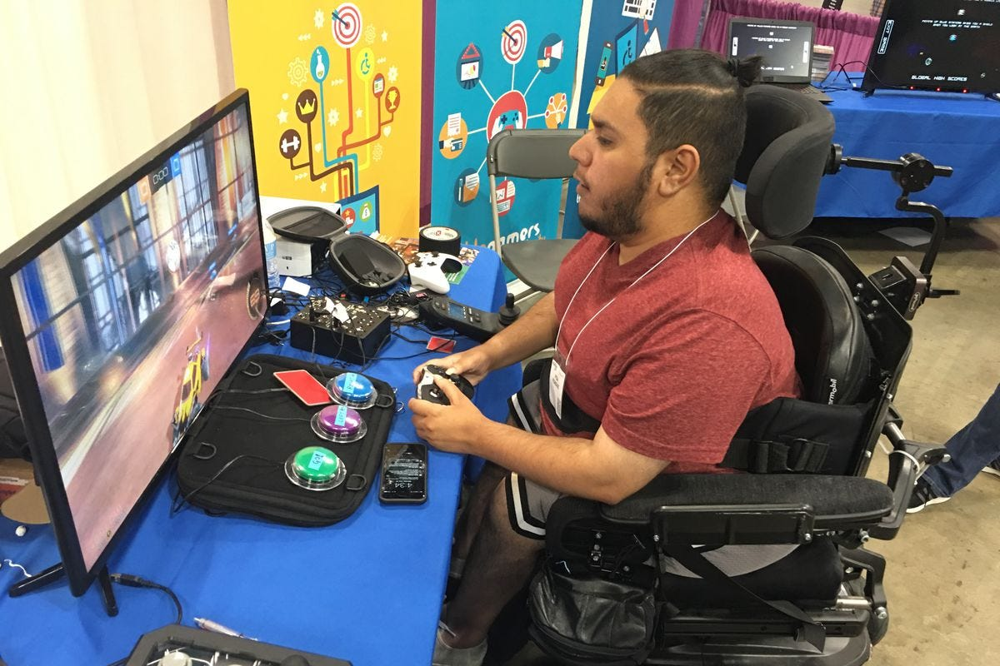
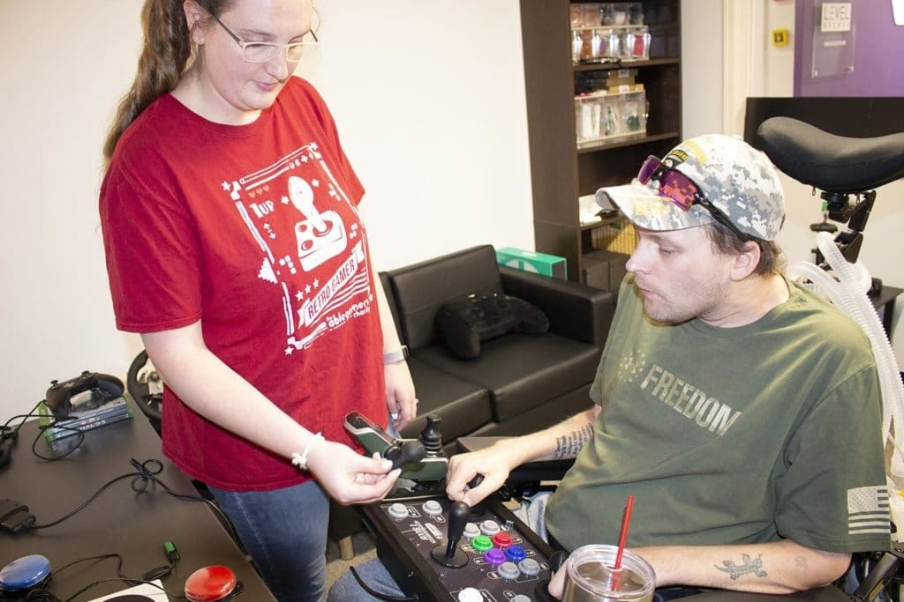
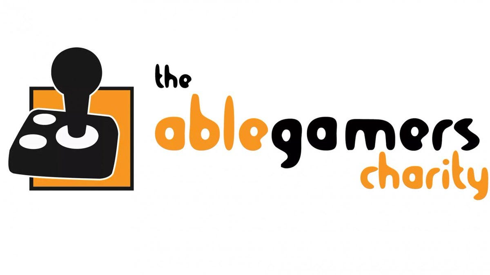

Sep 17, 2021
Able to contribute to AbleGamers
The non-profit raised over $1 million but needs more from us

Gaming could be a medium of change and it already is. As games could be vehicles for carrying emotions and that emotions are the most powerful levers for changing how we see and feel the world around us, then like Hollywood movies games could be used to make us feel and really know that we are not alone whatever our ability is. In my last article dealing with that choice of a Game engine by tiny game studios like Godda Game, I was maybe poorly surfacing the necessity for the game industry to expand its audience but in this article, it was mainly about including those who could not afford to buy expensive gaming console or PCs and would love to also play AAA games that are often designed to required expensive hardware. I was not thinking about people with disabilities what is a flaw for me who want to promote diversity and inclusion using any kind of medium like writing that could make people care about those who face exclusion, isolation, and discrimination of any kind.
Thankfully there are almost always others who see things correctly when we fail to have a correct view because of lack of empathy or because of any other reason. That’s what AbleGamers did because they saw that there are people with disabilities who could feel better with gaming experiences and they set out to address this need of inclusion of these people by using the medium of games. Combating Social isolation through play is the goal of AbleGamers by creating opportunities that enable play, foster inclusive communities, and improve the quality of life of people with disabilities. I am a strong believer that Games can help achieve these important things. Are you?

While there are startups working hard for building augmented self and augmented reality technologies people at AbleGames are focusing on assistive technology because there are 15% of the world’s population experiences one form of disability. Then this act of AbleGamers is a very good lesson of targeting the minimum viable audience and this audience that they are targeting is an important one if not the most important. Since 2004 AbleGamers is doing just that but the pandemic we have experienced helped us know how difficult it is to live in isolation what has made us see that the work of non-profit organizations like AbleGamers matters and lot and this new vision helped AbleGamers Raised $1 million through donations from big tech companies like Twitch, Ubisoft, Microsoft, Hasbro, and Dell. Games have profited a lot from the rise of crowdfunding, this was highlighted in my one of my past article titled Crowdfunded Games …. but this one is a particular one because that’s major tech players who backed this projects like a signal that tell us that a crowdfunding platform where registered backers are only registered companies who would make a social or environmental contribution is a very good idea to be built as a tech-enabled crowdfunding platform.
This world is more about contribution than about competition. That’s why writing about the good achievements of other players of the game industry is not something to avoid for an actor of the industry like Godda Game because it is not about us but about You who want to level up with Games that makes you have fun, be smarter, stronger and more have the sense of belonging to a community who care about you whatever your level of ability is. Godda Game really thinks that AbleGamers deserve more than $1 million for achieving this beautiful goal of combating isolation through play, Then we invite every company to contribute to AbleGamers.
